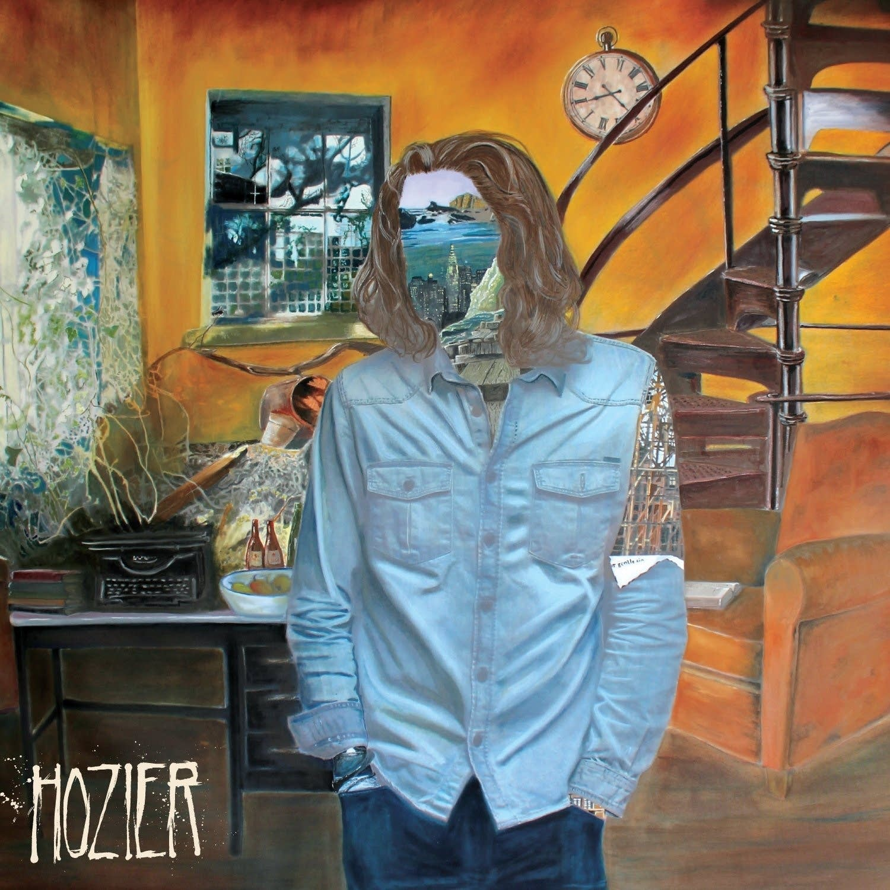

Hozier is an Irish Singer-Songwriter who slayed the house boots down with this album. He is best known for his song "Take Me to Church" but trust, every song on this album is a hit. This album truly makes you want to frolick in the woods.
*according to Jenesis Blancaflor
Literary References in the Album
1. Chanson by Oscar Wilde
“A rope in hand, for your other man to hang from a tree.” - From Eden by Hozier
2. A Portrait of the Artist as a Young Man by James Joyce.
“Shaking the wings of their terrible youths.” - Angel of Small Death and the Codeine Scene by Hozier
3. The Bible (Hozier's Version)
Take Me to Church by Hozier... like the whole song
Both albums also slay the house boots down